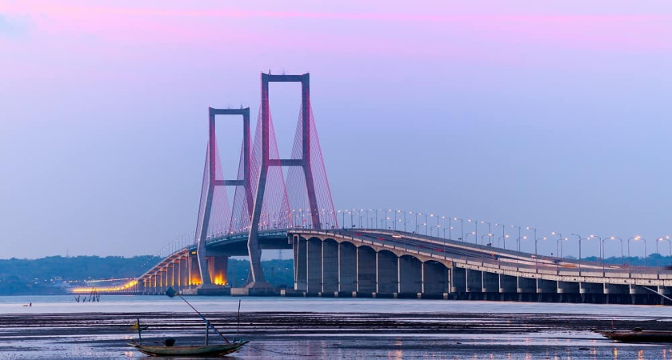

Tourist Places
Tourist Place in Surabaya
The Heroes Monument is the main symbol of the city, dedicated to the people who died during the Battle of Surabaya on 10 November 1945
Heroes Monument

The Suramadu National Bridge, or Suramadu Bridge, is a bridge that crosses the Madura Strait, connecting Java and Madura Island, Indonesia
Suramadu Bridge
Surabaya Submarine Monument or as Monkasel is the largest submarine monument in Asia, which was built in riverside of Kalimas, Surabaya
Surabaya Submarine Monument